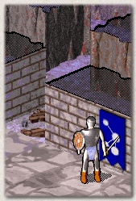
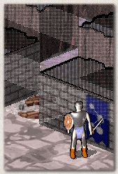
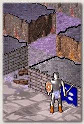

9. Options
ou
can customize NetHack in many ways to suit your tastes.
The Vulture's Eye interface also has a few options of its own.
This chapter is mainly about the latter, although it briefly
mentions the former.
There are three ways to change the 'basic' NetHack options:
- During a game, click the options button in the lower right corner
of the game screen to see a menu of options. You can change some of them
while playing.
- You can use the NETHACKOPTIONS environment variable to set
some options.
- You can edit NetHack's configuration file. The filename varies;
in the Vulture's Eye distribution it is called defaults.nh.
Please see the original NetHack Guidebook for more information.
Vulture's Eye reads its own options from four configuration files
in the config subdirectory: jtp_opts.txt, jtp_snds.txt,
jtp_keys.txt and jtp_intr.txt. The files are ASCII text files,
so you can edit them with any text editor.
Lines that start with the percent sign (%) are considered comments.
See the files for examples.
9.1. General options
The file jtp_opts.txt contains general interface options.
They are all of the form 'Option=value'.
Some of the various options are explained below: for the full list,
see jtp_opts.txt.
- screen_xsize and screen_ysize: These are the screen resolution
(width and height) that you want to use while playing. Larger resolutions show you more
of the dungeon at once. You can use any 256-color screen mode that your system supports:
the DOS version requires VESA support, and the Windows version requires DirectX support.
The width must be at least 800 pixels.
- play_music and play_effects: Set these to 1 if you want to hear
music and sound effects, or to 0 if you prefer silence. The DOS version
does not support sound yet, so these options are only meaningful in the Windows
and Linux versions.
- recenter_after_movement: If you set this to 1, the game will keep the main view
centered on your character during movement. If you set this to 0, the game will recenter
the main view only when your character moves off-screen. (You can of course scroll
the view yourself to see more.)
- wall_style: Vulture's Eye has three alternate graphics sets for walls.
If you set this to full, the game will show full-height, opaque walls.
If you set this to transparent, the game will show full-height, transparent walls.
If you set this to half_height, the game will show short, opaque walls.
The default wall style is full, but the alternate styles can be useful if you want
to make sure you haven't overlooked any objects or creatures. Below is a comparison
of the three wall styles:
|  |
 |
 |
| Full walls |
Transparent walls |
Half-height walls |
- scroll_delay: The minimum delay (in seconds) between two updates while scrolling
a game window. The smaller this value is, the faster the game windows will scroll when you
click on the scroll buttons (the edges of the screen, for the main window).
- command_delay: The minimum delay (in seconds) between two commands while scrolling
the main view. The smaller this value is, the faster you can give commands with the mouse.
If you feel the character is (for example) moving too fast, increase this value.
- gamma_correction: The lightness of the game graphics (a positive number). The
value 1.0 is the default. Values below 1 darken the graphics and values above 1 lighten them.
Good values are between 0.5 and 2.0.
9.2. Event sound options
The file jtp_snds.txt contains event sound options.
You can add your own custom sound effects or music to NetHack events
by modifying this file. These sounds are played when a particular message
is sent to NetHack's message window. One message plays at most one
sound (the first applicable one in the file).
Sounds can be WAVE sound effects, MIDI and MP3 files or CD audio tracks.
WAVE, MIDI and MP3 files must be in the sound subdirectory.
Short filenames are recommended for DOS compatibility.
The format is: [search string],SOUNDTYPE,[filename] where
- [search string] = the message string (complete or partial) that triggers the sound.
- SOUNDTYPE = WAVE, LWAV, MIDI, MP3, RSNG or NONE.
- WAVE plays a 44100Hz 16bit mono RAW sound effect
- LWAV plays a 22050Hz 8bit mono RAW sound effect
- MIDI plays a standard MIDI file
- MP3 plays an MP3 file (currently only supported in Linux)
- CDAU plays a track from an audio CD
- RSNG plays a random piece of background music
- NONE can be used to exclude messages (eg. 'restore' is not the same as 'store')
- [filename] = name of the sound file. If SOUNDTYPE is RSNG or NONE, then this value is not used.
If SOUNDTYPE is CDAU, give the track number here (for example, [01]).
9.3. Key mapping options
The file jtp_keys.txt contains key mapping options.
You can modify the default nethack command keys by modifying this file.
See the previous sections to learn more about the commands and the associated keys.
Command is customized by entering lines in the following format:
[command]=[new key], for example [kick]=[CTRL+d].
- [command] = the NetHack command to customize. All the available commands
are listed in jtp_keys.txt.
- [new key] = this is the new command key that you want to use.
This can be a single character, CTRL+character or META+character.
The META key is Alt on PC systems.
Note: commands that aren't customized will use the default NetHack keys.
9.4. The game introduction
The file jtp_intr.txt contains the script for the game introduction (the series of still images
that plays after you select a character). If you want, you can modify this to create a personal introduction,
for example to make it more appropriate to a particular character you want to play.
In the file, lines starting with % specify the picture to be shown, and the lines
after that are subtitles. The pictures must be 800x450, 256-color PCX files, and must be in the graphics
subdirectory.
Previous: Conduct Next: Scoring